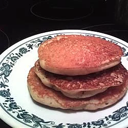

Dairy-free 'Buttermilk' Pancakes

Description
A tasty gluten-free and dairy-free pancake.
Ingredients
- cup sweet rice flour
- 2 teaspoons baking powder
- ½ teaspoon baking soda
- ½ teaspoon ground cinnamon (Optional)
- ½ teaspoon salt
- 2 eggs, beaten
- 1 ¼ cups soy yogurt
- ¼ cup rice milk
- 2 tablespoons vegetable oil or coconut oil